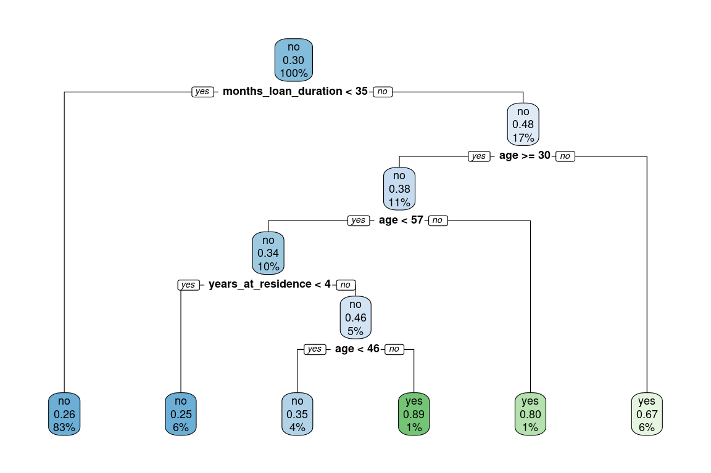
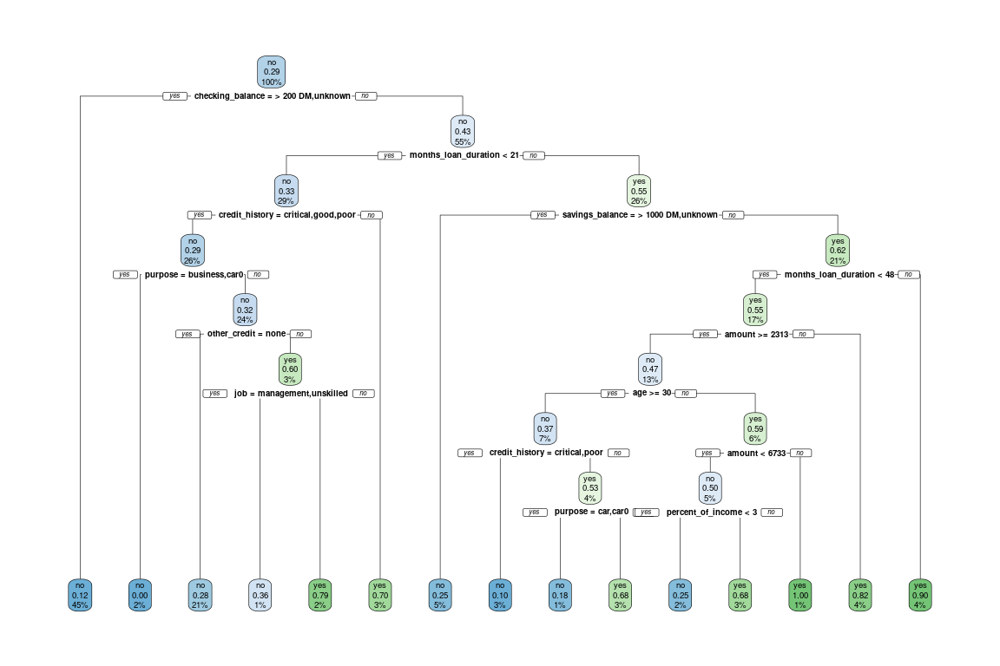

Chapter 2 Classification Trees
In this course you’ll learn how to work with tree-based models in R. This course covers everything from using a single tree for regression or classification to more advanced ensemble methods. You’ll learn to implement bagged trees, Random Forests, and boosted trees using the Gradient Boosting Machine, or GBM. These powerful techinques will allow you to create high performance regression and classification models for your data.
Welcome to the course!
2.1 Build a classification tree
Let’s get started and build our first classification tree. A classification tree is a decision tree that performs a classification (vs regression) task.
You will train a decision tree model to understand which loan applications are at higher risk of default using a subset of the German Credit Dataset. The response variable, called “default,” indicates whether the loan went into a default or not, which means this is a binary classification problem (there are just two classes).
You will use the rpart package to fit the decision tree and the rpart.plot package to visualize the tree.
Exercise
The data frame creditsub is in the workspace. This data frame is a subset of the original German Credit Dataset, which we will use to train our first classification tree model.
- Take a look at the data using the
str()function.
str(creditsub)'data.frame': 1000 obs. of 5 variables:
$ months_loan_duration: int 6 48 12 42 24 36 24 36 12 30 ...
$ percent_of_income : int 4 2 2 2 3 2 3 2 2 4 ...
$ years_at_residence : int 4 2 3 4 4 4 4 2 4 2 ...
$ age : int 67 22 49 45 53 35 53 35 61 28 ...
$ default : Factor w/ 2 levels "no","yes": 1 2 1 1 2 1 1 1 1 2 ...In R, formulas are used to model the response as a function of some set of predictors, so the formula here is
default ~ ., which means use all columns (except the response column) as predictors.Fit the classification decision tree using the
rpart()function from therpartpackage. In therpart()function, note that you’ll also have to provide the training data frame.
library(rpart)
# Create the model
credit_model <- rpart(formula = default ~ .,
data = creditsub,
method = "class")
credit_modeln= 1000
node), split, n, loss, yval, (yprob)
* denotes terminal node
1) root 1000 300 no (0.7000000 0.3000000)
2) months_loan_duration< 34.5 830 218 no (0.7373494 0.2626506) *
3) months_loan_duration>=34.5 170 82 no (0.5176471 0.4823529)
6) age>=29.5 112 43 no (0.6160714 0.3839286)
12) age< 56.5 102 35 no (0.6568627 0.3431373)
24) years_at_residence< 3.5 56 14 no (0.7500000 0.2500000) *
25) years_at_residence>=3.5 46 21 no (0.5434783 0.4565217)
50) age< 45.5 37 13 no (0.6486486 0.3513514) *
51) age>=45.5 9 1 yes (0.1111111 0.8888889) *
13) age>=56.5 10 2 yes (0.2000000 0.8000000) *
7) age< 29.5 58 19 yes (0.3275862 0.6724138) *- Using the model object that you create, plot the decision tree model using the
rpart.plot()function from therpart.plotpackage.
library(rpart.plot)
# Display the results
rpart.plot(x = credit_model, yesno = 2)
Each node shows:
- the predicted class (default: no or yes),
- the predicted probability of default,
- the percentage of observations in the node.
Introduction to classification trees
Advantages of tree-based methods
What are some advantages of using tree-based methods over other supervised learning methods?
Model interpretability (easy to understand why a prediction is made).
Model performance (trees have superior performance compared to other machine learning algorithms).
No pre-processing (e.g. normalization) of the data is required.
1 and 2 are true.
1 and 3 are true.
2.2 Prediction with a classification tree
Let’s use the decision tree that you trained in the first exercise. The tree predicts whether a loan applicant will default on their loan (or not).
Assume we have a loan applicant who:
- is applying for a 40-month loan
- is 35 years old
- has been at their current residence for 6 years
After following the correct path down the tree for this individual’s set of data, you will end up in a “Yes” or “No” bucket (in tree terminology, we’d call this a “leaf”) which represents the predicted class. Ending up in a “Yes” leaf means that the model predicts that this individual will default on their loan, where as a “No” prediction means that they will not default on their loan.
Starting with the top node of the tree, you must evaluate a query about a particular attribute of your data point (e.g. is months_loan_duration < 35?). If the answer is yes, then you go to the left at the split; if the answer is no, then you will go right. At the next node you repeat the process until you end up in a leaf node, at which point you’ll have a predicted class for your data point.
According to the model, will this person default on their loan? No
Overview of the modeling process
2.3 Train/test split
For this exercise, you’ll randomly split the German Credit Dataset into two pieces: a training set (80%) called credit_train and a test set (20%) that we will call credit_test. We’ll use these two sets throughout the chapter.
The credit data frame is loaded into the workspace.
- Define
n, the number of rows in the credit data frame.
# Total number of rows in the credit data frame
(n <- nrow(credit))[1] 1000- Define
n_trainto be ~80% ofn.
# Number of rows for the training set (80% of the dataset)
(n_train <- round(.80 * n)) [1] 800- Set a seed (for reproducibility) and then sample
n_trainrows to define the set of training set indices.
# Create a vector of indices which is an 80% random sample
set.seed(321)
train_indices <- sample(1:n, n_train)- Using row indices, subset the
creditdata frame to create two new datasets:credit_trainandcredit_test
# Subset the credit data frame to training indices only
credit_train <- credit[train_indices, ]
# Exclude the training indices to create the test set
credit_test <- credit[-train_indices, ] 2.4 Train a classification tree model
In this exercise, you will train a model on the newly created training set and print the model object to get a sense of the results.
- Train a classification tree using the
credit_traindata frame.
# Train the model (to predict 'default')
credit_model <- rpart(formula = default ~ .,
data = credit_train,
method = "class")- Look at the model output by printing the model object.
# Look at the model output
print(credit_model)n= 800
node), split, n, loss, yval, (yprob)
* denotes terminal node
1) root 800 234 no (0.70750000 0.29250000)
2) checking_balance=> 200 DM,unknown 359 43 no (0.88022284 0.11977716) *
3) checking_balance=< 0 DM,1 - 200 DM 441 191 no (0.56689342 0.43310658)
6) months_loan_duration< 20.5 233 77 no (0.66952790 0.33047210)
12) credit_history=critical,good,poor 210 61 no (0.70952381 0.29047619)
24) purpose=business,car0 18 0 no (1.00000000 0.00000000) *
25) purpose=car,education,furniture/appliances,renovations 192 61 no (0.68229167 0.31770833)
50) other_credit=none 167 46 no (0.72455090 0.27544910) *
51) other_credit=bank,store 25 10 yes (0.40000000 0.60000000)
102) job=management,unskilled 11 4 no (0.63636364 0.36363636) *
103) job=skilled 14 3 yes (0.21428571 0.78571429) *
13) credit_history=perfect,very good 23 7 yes (0.30434783 0.69565217) *
7) months_loan_duration>=20.5 208 94 yes (0.45192308 0.54807692)
14) savings_balance=> 1000 DM,unknown 40 10 no (0.75000000 0.25000000) *
15) savings_balance=< 100 DM,100 - 500 DM,500 - 1000 DM 168 64 yes (0.38095238 0.61904762)
30) months_loan_duration< 47.5 137 61 yes (0.44525547 0.55474453)
60) amount>=2313 103 48 no (0.53398058 0.46601942)
120) age>=29.5 57 21 no (0.63157895 0.36842105)
240) credit_history=critical,poor 21 2 no (0.90476190 0.09523810) *
241) credit_history=good,perfect,very good 36 17 yes (0.47222222 0.52777778)
482) purpose=car,car0 11 2 no (0.81818182 0.18181818) *
483) purpose=business,education,furniture/appliances,renovations 25 8 yes (0.32000000 0.68000000) *
121) age< 29.5 46 19 yes (0.41304348 0.58695652)
242) amount< 6733 38 19 no (0.50000000 0.50000000)
484) percent_of_income< 2.5 16 4 no (0.75000000 0.25000000) *
485) percent_of_income>=2.5 22 7 yes (0.31818182 0.68181818) *
243) amount>=6733 8 0 yes (0.00000000 1.00000000) *
61) amount< 2313 34 6 yes (0.17647059 0.82352941) *
31) months_loan_duration>=47.5 31 3 yes (0.09677419 0.90322581) *rpart.plot(x = credit_model, yesno = 2)
Evaluating classification model performance
2.5 Compute confusion matrix
As discussed in the previous video, there are a number of different metrics by which you can measure the performance of a classification model. In this exercise, we will evaluate the performance of the model using test set classification error. A confusion matrix is a convenient way to examine the per-class error rates for all classes at once.
The confusionMatrix() function from the caret package prints both the confusion matrix and a number of other useful classification metrics such as “Accuracy” (fraction of correctly classified instances).
The caret package has been loaded for you.
library(caret)- Generate class predictions for the
credit_testdata frame using thecredit_modelobject.
# Generate predicted classes using the model object
class_prediction <- predict(object = credit_model,
newdata = credit_test,
type = "class")
# This is not in Data Camp but needed for last Chapter Exercise
dt_preds <- predict(object = credit_model,
newdata = credit_test,
type = "prob")[, "yes"]
# mean(dt_preds)- Using the
caret::confusionMatrix()function, compute the confusion matrix for the test set.
# Calculate the confusion matrix for the test set
confusionMatrix(data = class_prediction,
reference = credit_test$default) Confusion Matrix and Statistics
Reference
Prediction no yes
no 121 45
yes 13 21
Accuracy : 0.71
95% CI : (0.6418, 0.7718)
No Information Rate : 0.67
P-Value [Acc > NIR] : 0.1291
Kappa : 0.2522
Mcnemar's Test P-Value : 4.691e-05
Sensitivity : 0.9030
Specificity : 0.3182
Pos Pred Value : 0.7289
Neg Pred Value : 0.6176
Prevalence : 0.6700
Detection Rate : 0.6050
Detection Prevalence : 0.8300
Balanced Accuracy : 0.6106
'Positive' Class : no
Splitting criterion in trees
2.6 Compare models with a different splitting criterion
Train two models that use a different splitting criterion and use the validation set to choose a “best” model from this group. To do this you’ll use the parms argument of the rpart() function. This argument takes a named list that contains values of different parameters you can use to change how the model is trained. Set the parameter split to control the splitting criterion.
The datasets credit_test and credit_train have already been loaded for you.
- Train a model, splitting the tree based on gini index.
# Train a gini-based model
credit_model1 <- rpart(formula = default ~ .,
data = credit_train,
method = "class",
parms = list(split = "gini"))- Train a model, splitting the tree based on information index.
# Train an information-based model
credit_model2 <- rpart(formula = default ~ .,
data = credit_train,
method = "class",
parms = list(split = "information"))- Generate predictions on the test set using both models.
# Generate predictions on the test set using the gini model
pred1 <- predict(object = credit_model1,
newdata = credit_test,
type = "class")
# Generate predictions on the test set using the information model
pred2 <- predict(object = credit_model2,
newdata = credit_test,
type = "class")- Classification error is the fraction of incorrectly classified instances. Compute and compare the test set classification error of the two models by using the
ce()function from theMetricspackage.
library(Metrics)
# Compare classification error
ce(actual = credit_test$default,
predicted = pred1)[1] 0.29ce(actual = credit_test$default,
predicted = pred2) [1] 0.325